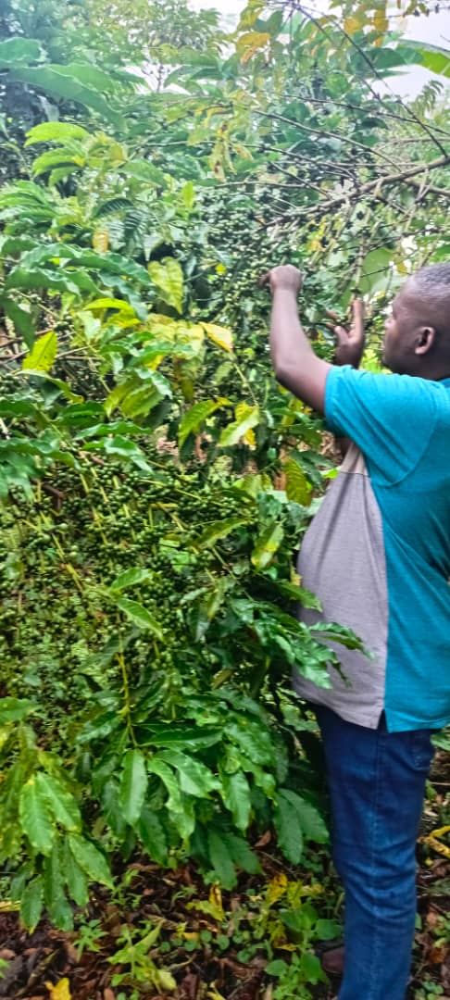
☕ Coffee Harvest Season - Premium Arabica beans
🤝 Community Engagement - Working together for better farming

👧🌱 Young Children in Farming - Empowering young farmers
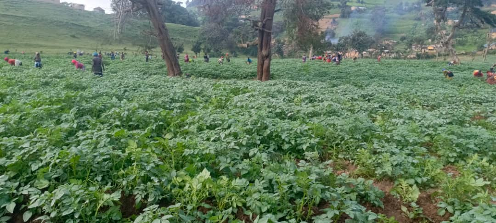
🌾 Smart Farm Landscape - Sustainable agriculture in action
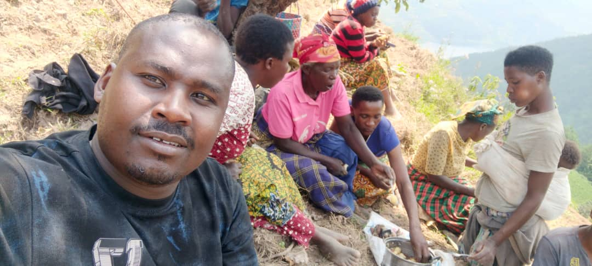
🏡 Rural Habitat - Supporting farming communities
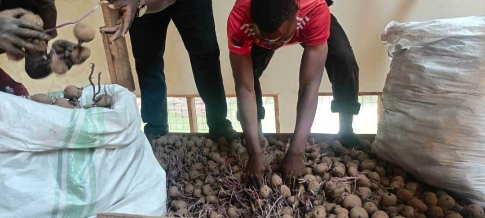
🌱 Quality Seeds - Irish seedlings ready for planting
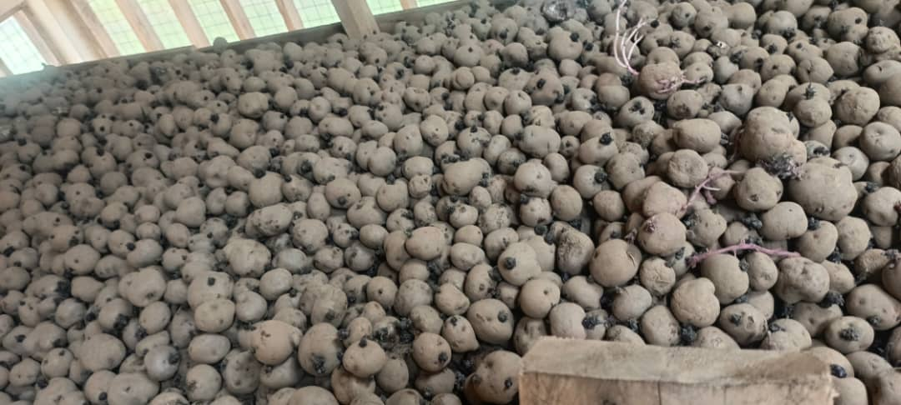
🥔 Irish Seedlings - Well stocked and ready for distribution
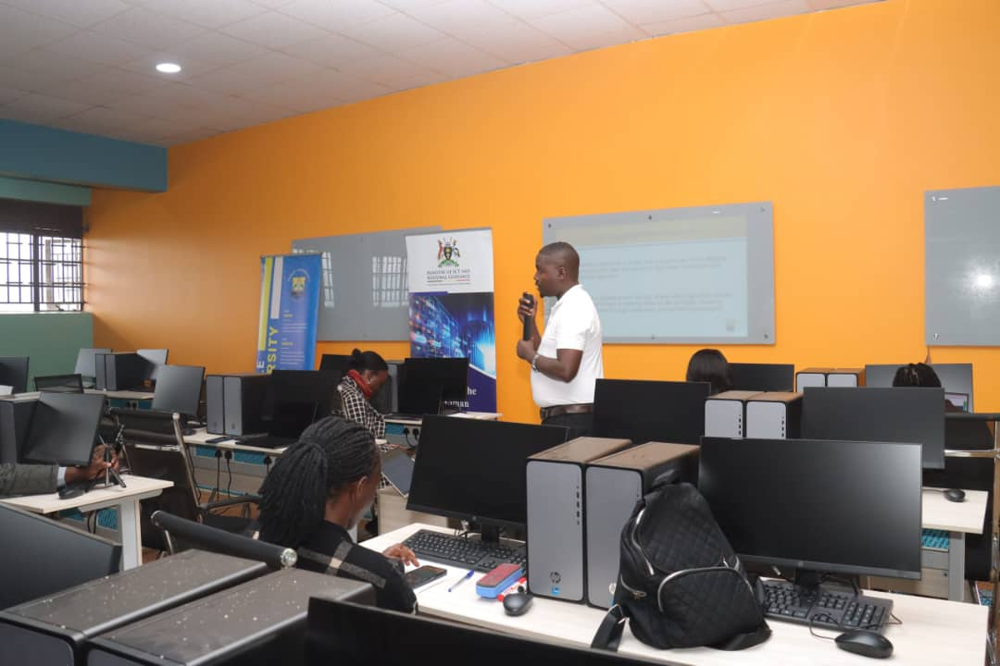
📢 Community Sensitization - Teaching modern farming techniques
👋 Welcome to WillBry - Smart Farming, Smarter Foods
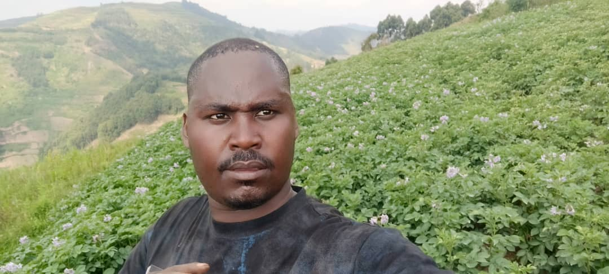
🌱 Young Farmers - The future of Ugandan agriculture
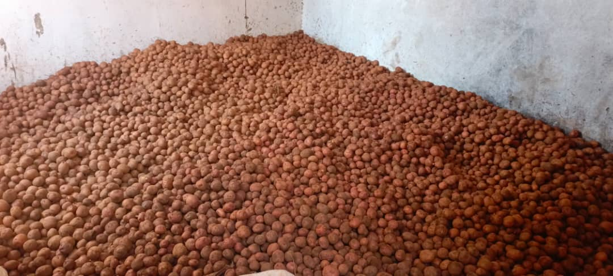
🥔 Irish Harvests - Quality Irish potato yields
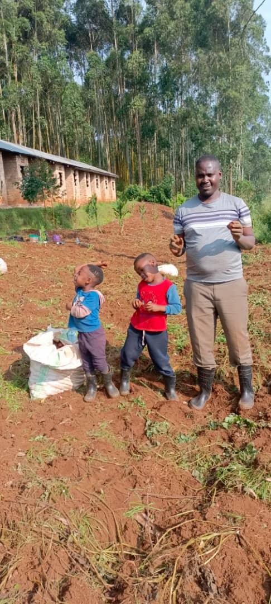
🌿 Ready Crops - Harvesting Time
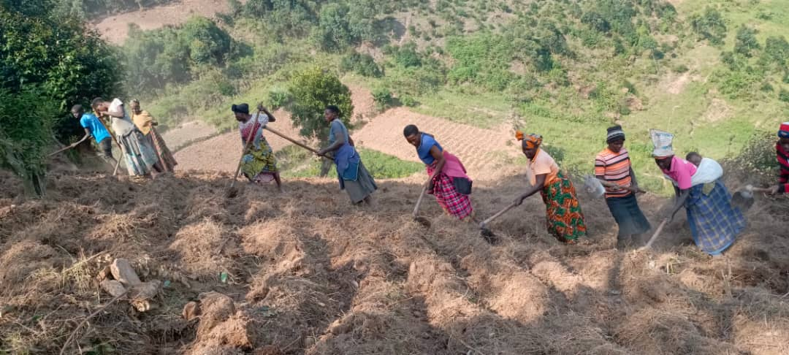
📊 Farm Management - Professional agricultural practices
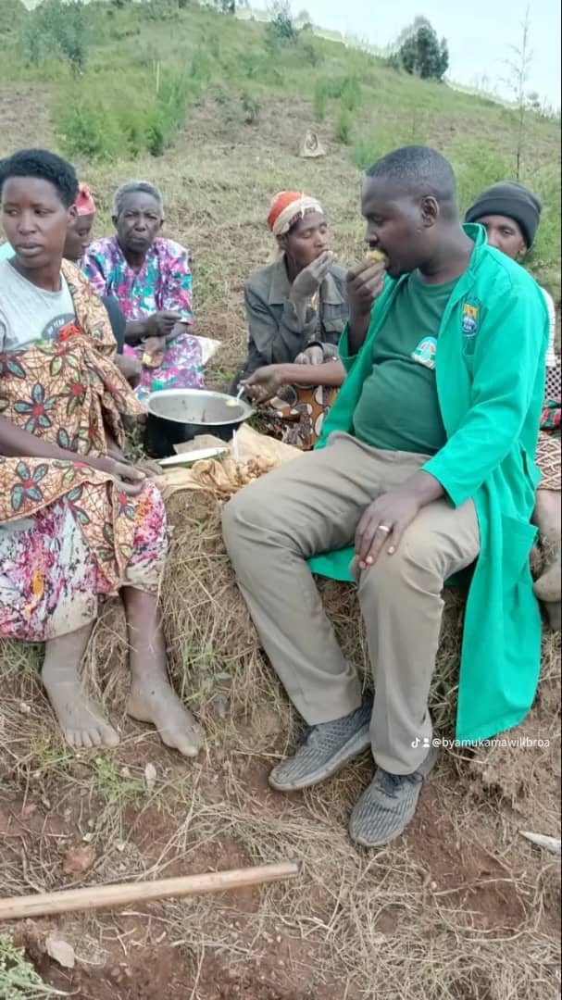
👨🌾 Dedicated Workers - Our hardworking farming team
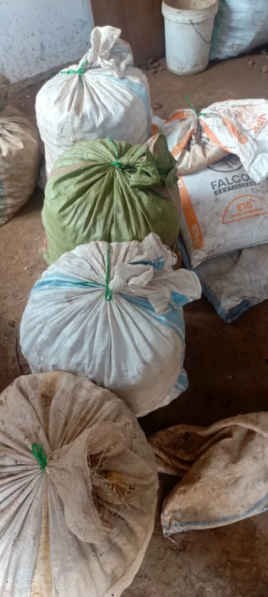
🌅 Morning at the Farm - Starting the day with purpose
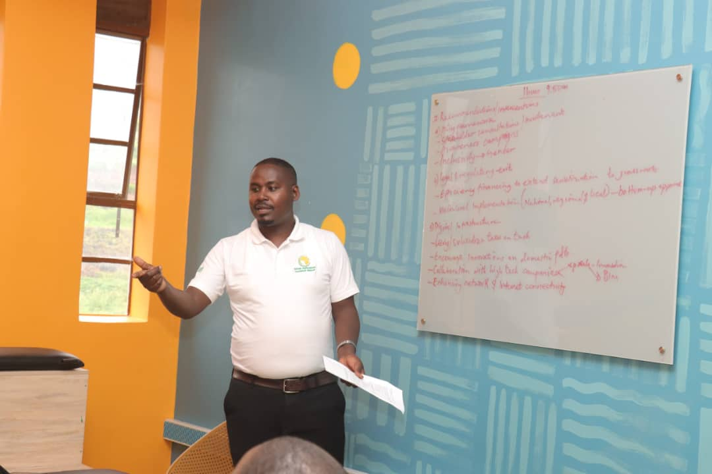
🔧 Innovation in Action - Implementing new technologies
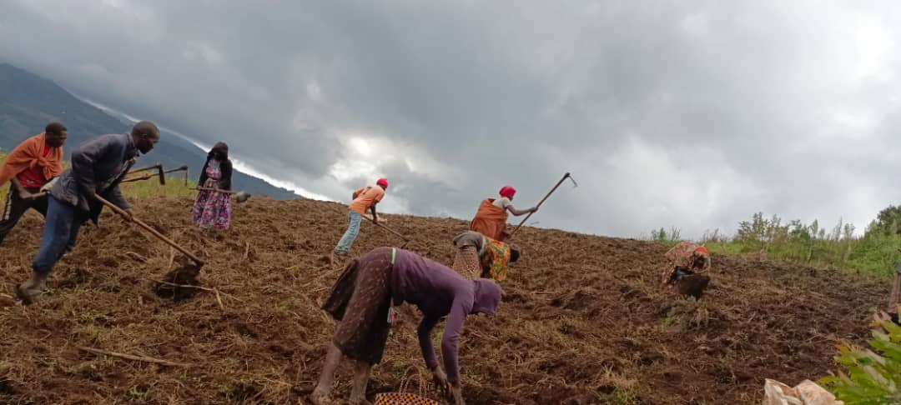
🌾 Golden Fields - Ready for harvest season
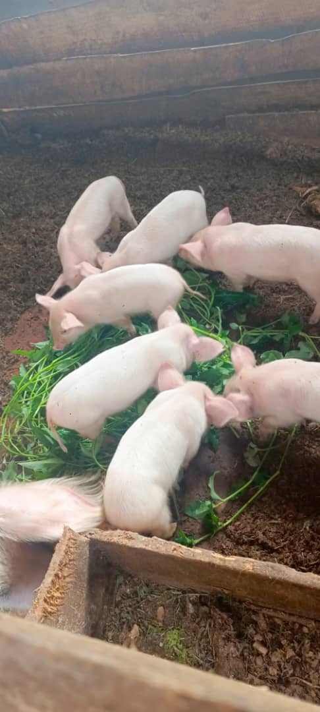
📚 Piggery - Healthy local foods for pigs
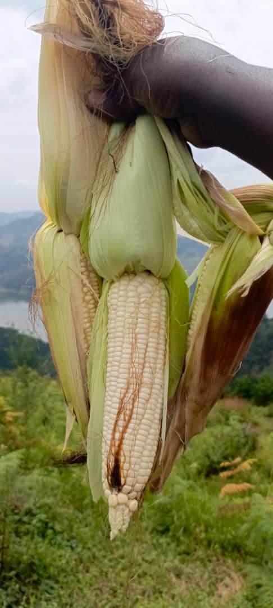
🌽 Maize Production - High-yield farming results
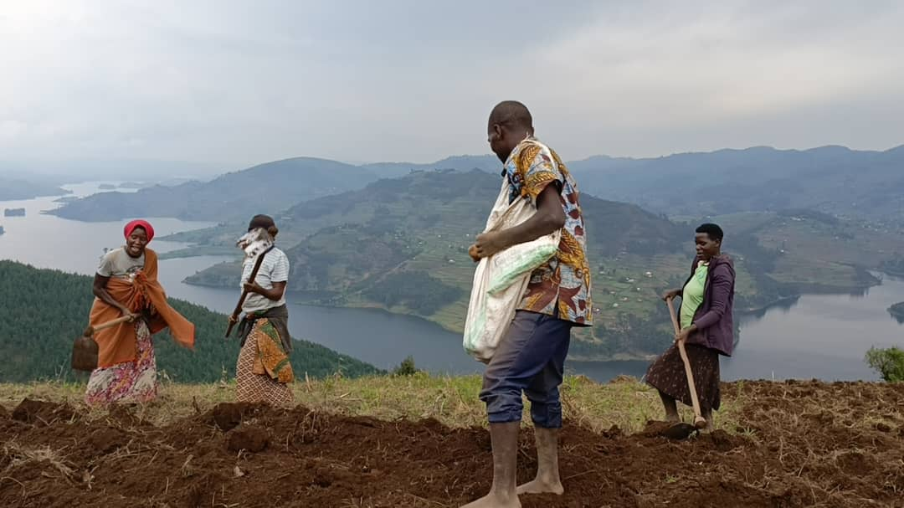
📋 Farm Management - Organized and efficient operations
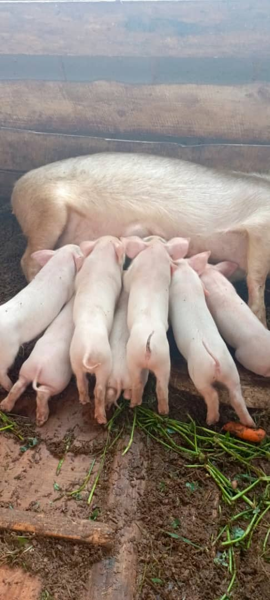
🐷 Livestock Farming - Healthy piggery management
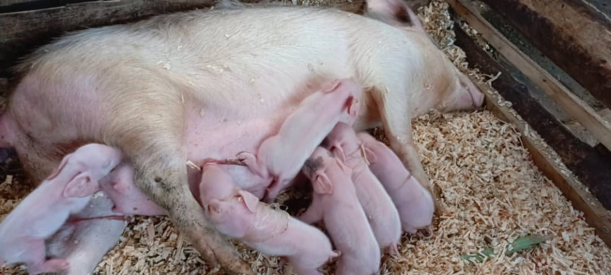
🏠 Modern Piggery - Sustainable livestock practices
🎓 Training Young Farmers - Enforcing modern ways of farming
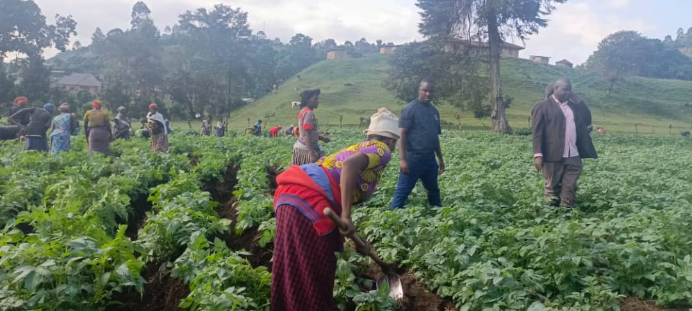
🧑🌾 Farm Maintenance - Careful weeding for better yields
.jpg)
🧑🌾Meet Nakivale community- Our Nakivale refugee camp about black soldier fly(BSF) farming contracted by shared by Shared Action and Agape Innovations
.jpg)
🧑🌾 Contracted to do A feasibility study for BSF farming in Nakivale refugee camp
.jpg)
🧑🌾 Feasibility Study - Analyzing potential for BSF farming in Nakivale